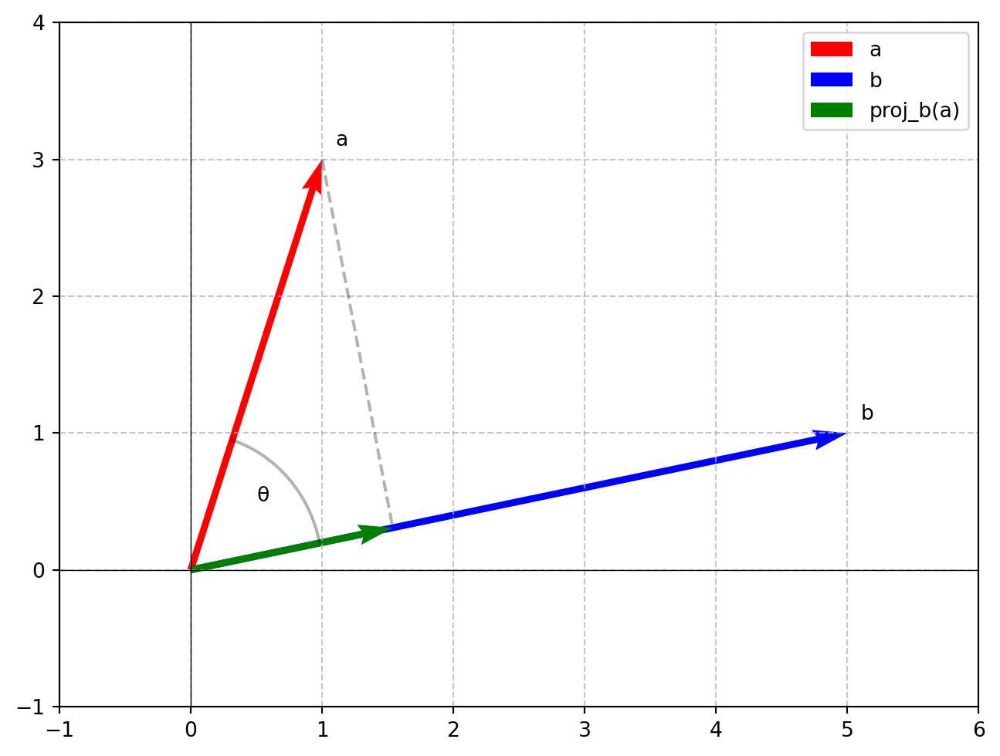

2-기초(1)
선형 대수

Vector
vector는 크기와 방향을 가지고 있다.
Example
\[\begin{bmatrix} 3 \\ 2 \end{bmatrix}\]- 크기: \(\sqrt{9 + 4} = \sqrt{13}\)
- 방향: \(tan^{-1}(\frac{2}{3})\)
크기와 방향이 같으면 같은 벡터이다.
덧셈
벡터의 덧셈을 기하학적으로 알아보자
\[ \begin{bmatrix} 3 \\ 2 \end{bmatrix} + \begin{bmatrix} -2 \\ 1 \end{bmatrix} \]
위의 수식을 좌표평면에 나타나면 다음과 같다.

끝점을 다 더한 좌표와 시작 점을 연결한 벡터인 초록색 화살표가 두 벡터의 합이 된다.
Scalar 배
vector에 scalar, 즉 숫자 하나를 곱하면 무슨 일이 생길까?
\[ 2 * \begin{bmatrix} 2 \\ 1 \end{bmatrix} = \begin{bmatrix} 4 \\ 2 \end{bmatrix} \] \[ -2 * \begin{bmatrix} 2 \\ 1 \end{bmatrix} = \begin{bmatrix} -4 \\ -2 \end{bmatrix} \]
마찬가지로 좌표평면으로 나타내는건 귀찮아서 생략하겠다.
Scalar 배를 한 벡터끼리 더하면 모든 2차원 좌표를 표현할 수 있다.
전치 (Transpose)
행렬 \(A\)의 요소 \(a_{ij}\)는 A의 Transpose인 \(A^T\)의 \(a_{ji}\)가 된다. 즉, 행렬 \(A\)를 전치하면 diagnal(대각선 요소)를 제외한 모든 요소가 대각선을 기준으로 서로 뒤바뀐다.
Symmetrix matrix: \(A = A^T\)인 행렬, 즉 대각선을 기준으로 값이 전부 같은 행렬Hermitian matrix: \((A^*)^T = A^H(conjugate transpose) = A\)를 만족하는 행렬
Vector의 경우에는 Column Vector의 경우, Transpose시 Row Vector로, Row Vector의 경우도 반대로 작용한다.
Properties
\((A^T)^T = A\)
\((A+B)^T = A^T + B^T\)
\(\color{red}{(AB)^T = B^TA^T}\)
\((A^TA)^T\)와 \((AA^T)^T\)의 결과는 항상 자기 자신이 된다. →
Symmetrix matrix\(C(A)^T = CA^T\)
\(det(A^T) = det(A)\)
\((A^T)^{-1} = (A^{-1})^T\)
Inner Product & Projection
\[ \underset{a}{\begin{bmatrix} 1 \\ 3 \end{bmatrix}} * \underset{b}{\begin{bmatrix} 5 \\ 1 \end{bmatrix}} = 1 * 5 + 3 * 1 = 8 = a^Tb = b^Ta \]
갑자기 등장한 \(a^Tb\)가 의미하는건 아래와 같다.
\(a^Tb = ||a||*||b||cosθ\)
||a||는 a 벡터의 크기를 의미한다.
위의 식을 그림으로 표현해보자

내적은 초록색 화살표와 파란색 화살표의 곱으로 표현할 수 있다.
이는 a 벡터가 b 벡터의 방향에 대해 얼마나 투영되었는지를 나타낸다.
두 벡터의 방향이 일치할 때 내적의 값이 가장 크고, 수직일 때 0 (안 닮음을 의미), 반대 방향일 때 가장 작은 값이 된다.
단위 벡터(크기가 1인 벡터) 계산
위의 식으로 부터 다음의 추론 과정을 통해 단위 벡터를 계산할 수 있다.
\(a^Ta = ||a||^2\)
∴ \(||a|| = \sqrt{a^Ta}\)
∴ 단위 벡터는 \(\frac{a}{||a||}\) = \(\frac{a}{\sqrt{a^Ta}}\)
정사형 벡터의 좌표 계산
벡터의 좌표는 방향과 크기의 곱으로 표현할 수 있다.
\(a^Tb = ||a||*||b||cosθ\)
정사형 벡터의 크기는 \(\frac{a^Tb}{||b||} = \frac{a^Tb}{\sqrt{b^Tb}}\)
장사형 벡터의 방향은 b의 단위 벡터와 같다.
즉, 정사형 벡터의 좌표는 \(\frac{a^Tb}{\sqrt{b^Tb}} * \frac{b}{\sqrt{b^Tb}} = \frac{a^Tb}{b^Tb}b\)
\(a^T\frac{b}{\sqrt{b^Tb}}*\frac{b}{\sqrt{b^Tb}}\)로도 구할 수 있다.
a와 수직으로 연결되는 정사형 벡터 \(\hat{x}\)
\((a-b\hat{x})^Tb\hat{x} = 0\)
\(a^Tb - b^Tbb\hat{x} = 0\)
\(\hat{x} = \frac{a^Tb}{b^Tb}\)
Norm
크기를 나타내는 것(0 포함, 양 음수 scalar)
2-Norm (\(l_2\)-norm)
벡터의 물리적인 길이.
\[ a = \begin{bmatrix} 1 \\ 2 \\ 3 \end{bmatrix} \]
\(||a||_2 = \sqrt{1^2+2^2+3^2} = (|1|^{\color{red}{2}}+|2|^{\color{red}{2}}+|3|^{\color{red}{2}})^{\color{red}{\frac{1}{2}}}\)
2 제곱에, \(\frac{1}{2}\)여서 2-norm이다.
두 벡터 사이의 거리는 두 벡터의 차이의 2-norm이다.
1-Norm (\(l_1\)-norm)
1 제곱에 \(\frac{1}{1}\)을 계산해주면 된다.
\(||a||_1 = (|1|^1+|2|^1+|3|^1)^{\frac{1}{1}}\)
p-Norm (\(l_p\)-norm)
\(||a||_p = (|x_1|^p+|x_2|^p+|x_3|^p+...)^{\frac{1}{p}} = (\underset{t}{\Sigma} |x_t|^p)^{\frac{1}{p}} \quad (p ≥ 1)\)
infinity-Norm
\(||a||_∞ = \underset{t}{max}|x_t|\)
1-norm, 2-norm, infinity-norm의 값이 1이 되는 모든 벡터들을 좌표평면에 나타내면 다음과 같다.
같은 벡터일 때, 1-norm ≥ 2-norm ≥ ∞-norm 순으로 크다.